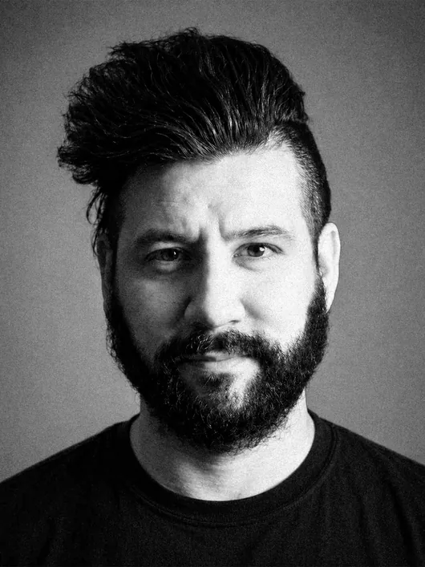
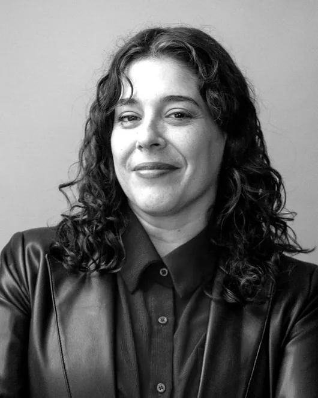
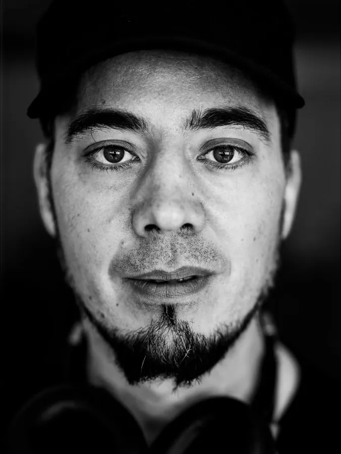

Equipo organizador
Cuadro 01 · Equipo


Por qué ahora
Cuadro 02 · ContextoRegistrar la protesta, una realidad que involucra riesgos.
En octubre de 2026, miles de personas, en su mayoría jóvenes, salieron a las calles en Francia, España, Italia, Bélgica, Portugal, Grecia, Alemania, Argentina, India y otros países para exigir una vida digna, educación, salud y vivienda. En muchos de esos lugares, quienes documentaban las protestas sufrieron agresiones y detenciones.
Chile no está ajeno: ese mismo mes, las marchas estudiantiles y contra los recortes presupuestarios volvieron al espacio público.
Con la democratización de la cámara, cada vez más personas sin experiencia fotografían manifestaciones, una actividad riesgosa para quien fotografía y para quienes aparecen en la imagen.
Por eso, el Workshop ofrece formación en seguridad, técnica y ética a quienes tienen menos experiencia. Formar miradas responsables es un aporte a la democracia y al derecho a la información.
Colabora
Cuadro 03 · SedeEl workshop se realiza en la Sala de Cine Gladys Pinto Celedón, con la colaboración del Departamento de las Culturas y las Artes de la Universidad de Santiago de Chile.